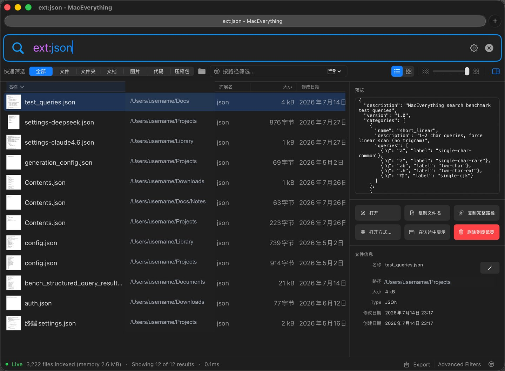

macOS 本地文件搜索
MacEverything
文件名、路径与内容，输入即得。
把散落在 Mac 和外接磁盘里的文件快速找回来。搜索在本机完成，从常用关键词到正则、全文与结构化筛选，都在一个轻巧的原生应用里。

为大量文件设计增量索引与 Trigram 检索，让常见查询保持灵敏。
中文搜索友好支持拼音首字母、文件名、路径与全文内容。
搜索后直接处理预览、定位、批量操作与导出连在一起。
从一个词，到你要的文件
搜索保持直接；需要更精确时，再逐步加上类型、路径、时间、大小或正则条件。
文件名与路径一起搜
按名称或目录快速缩小范围。支持拼音首字母、通配符、正则表达式和多种结构化条件。
需要时搜索文件内容
为常见文本建立全文索引，用 infile: 找回记得内容、却忘了文件名的资料。
结果就是下一步
预览文件，查看信息，在访达中显示，批量选择并导出列表；减少搜索与处理之间的来回切换。
也为日常工作流准备好了
MacEverything 除了图形界面，也提供本机命令行与自动化接口。可以在终端、脚本和支持 MCP 的 AI 工具里复用同一份索引。
mace终端快速查询HTTP API本机脚本与自动化MCP连接 Codex、Claude Code 等工具本机索引搜索数据由你的 Mac 管理
下载
从 MacEverything 开始
兼容 macOS 15 及以上。Apple Silicon 与 Intel 分别提供安装包。
版本说明：1.10.20 已撤回，暂不提供下载。修复版仍在验证；目前可下载的正式版本为 1.5.30。
SHA-256 Apple Silicon：350cedf80226057549d0e007c382d58f776aadc1a3b7f6accf13c30b816daed
Intel：3cebba7edf42117272be58cc5c2b09fa25579a4b45cd1c985bd0fecefce9371d